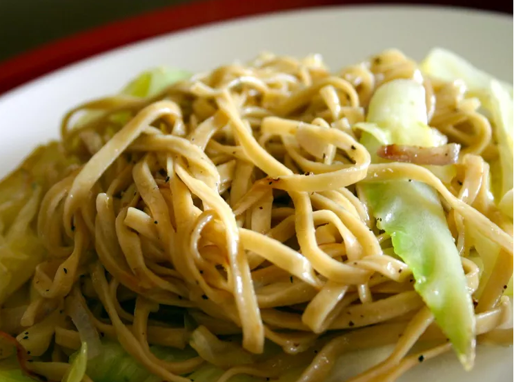

HOME
RECIPE FOR NOODLES

Delicious Noodles Warning! Absolutely irresistable!
This is a German recipe for fried cabbage and noodles that belonged to my grandmother. It's cabbage that is lightly browned in butter and tossed with egg noodles for a wonderful, hearty, and fast dish.
Ingredients:
- 1 (16 ounce) package egg noodles
- 1 stick butter
- 1 medium head green cabbage, chopped
- salt and pepper to taste
Directions:
- Bring a large pot of lightly salted water to a boil. Add egg noodles and cook until the pasta is tender yet firm to the bite, about 5 minutes; drain.
- Meanwhile, melt butter in a large skillet over low heat. Add cabbage and season with salt and pepper. Cover and cook until the cabbage begins to brown, 5 to 7 minutes. Add cooked noodles; cook and stir until the noodles begin to brown, about 5 minutes.